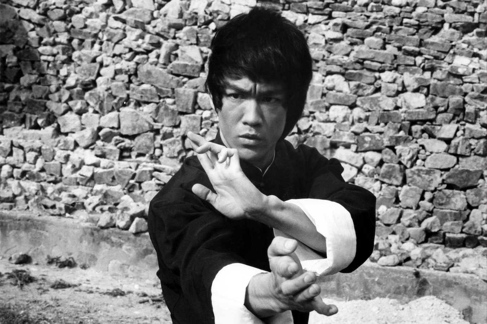

Bruce Lee
1940-1973
Movie Star and The Founder of Jeet Kune Do.

A still of Bruce Lee from the set of 1973's "Enter The Dragon".
Here's a time line of Bruce Lee's life
-
1940 -
Bruce was born in San Francisco, USA.
-
1952 -
Bruce starts school at the age of 12.
-
1954 -
At the age of 13, Bruce takes up the study of wing chun gung fu under renowned wing chun master, Yip Man.
-
1959 -
After living for several months in San Fransisco, Bruce moves to Seattle to continue his High School
education. He works as a live-in waiter for Ruby Chow, her husband was a friend of Bruce's father.
-
1959 -
Bruce begins teaching Martial Arts in the US. He teaches his own style he calls "Jun Fan Gung Fu" which
literaly translated as "Bruce Lee's Kung Fu".
-
1959 -
Bruce moves to San Fransisco to live with his older sister Agnes.
-
1961 -
Bruce enrolls at the University of Washington.
-
1964 -
Bruce drops out of University and moves to Oakland.
-
1967 -
During his first season of "The Green Hornet" Bruce creates his own iconic martial art style he called "Jeet
Kune Do".
-
1970 -
Bruce returns to China.
-
1971 -
Bruce returned to China after struggling to make it big in Hollywood. He did however become a huge success
when moving to Hong Kong. Nearly straight away, he was signed up to star in two of his iconic films "The Big
Boss" and "Fist of Fury" which were hugely successful in Asian cinema.
-
1972 -
The highlight of Bruce's career came in 1972, when at the peak of his global popularity; He wrote, directed
and starred in his biggest hit film "The Way of The Dragon".
-
1973 -
Bruce agreed and starred in "Enter The Dragon" in which he would play the lead in what would be his most
famous film, but unfortunately would also be his last...
-
1973 - Bruce Lee dies at age of 33.
"All these years later, people still wonder about how Bruce died. I prefer to remember how he lived."
--Linda Lee Cadwell